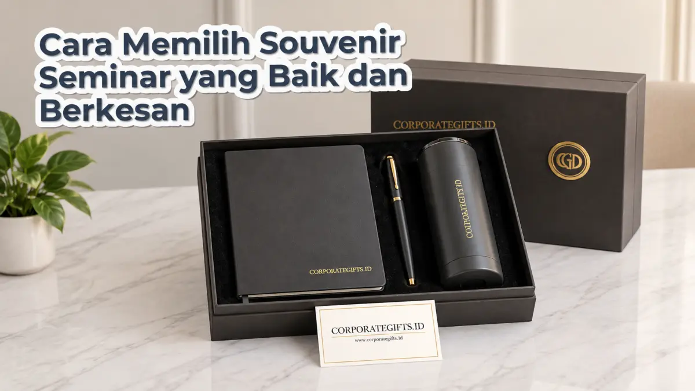

Corporate Gifts ID - Cara memilih souvenir seminar yang baik dan berkesan adalah dengan menyesuaikan barang dengan profil audiens, memprioritaskan nilai guna harian, menyelaraskannya dengan tema pesan acara, menjaga standar kualitas di dalam batas anggaran, serta menerapkan branding logo yang jelas namun tetap elegan. Kelima prinsip ini memastikan produk souvenir tidak berakhir sebagai limbah yang dibuang, melainkan menjadi aset promosi yang aktif digunakan oleh peserta selama berbulan-bulan setelah event selesai.
Souvenir merupakan salah satu elemen inti dalam sebuah paket seminar kit perusahaan. Jika dipilih dengan strategi yang matang, cinderamata ini berubah menjadi media penghubung emosional antara penyelenggara dan peserta. Sebaliknya, pemilihan souvenir yang asal-asalan tanpa mempertimbangkan kebutuhan audiens hanya akan menambah tumpukan barang tidak terpakai di meja kerja.
Poin Kunci Strategi Souvenir Seminar:
- Relevansi Audiens: Sesuaikan karakteristik barang dengan status peserta, apakah mahasiswa, praktisi muda, aparatur sipil negara, atau jajaran eksekutif korporat.
- Fungsi Praktis Jangka Panjang: Produk dengan frekuensi pemakaian tinggi (seperti botol minum dan buku catatan) menghasilkan eksposur merek harian tanpa biaya iklan tambahan.
- Kualitas Melebihi Kuantitas: Memberikan satu barang berkualitas solid jauh lebih bernilai dibanding membagikan banyak barang murah yang lekas rusak.
- Estetika Cetak Minimalis: Hindari penempatan logo berukuran mencolok yang mengurangi minat peserta untuk memakai barang di ruang publik.
Pentingnya Memilih Souvenir Seminar Secara Tepat
Dalam menyelenggarakan agenda seminar atau lokakarya berskala nasional maupun regional, souvenir bukan sekadar formalitas pembagian tanda terima kasih. Produk ini adalah representasi nyata dari standar profesionalisme instansi pengundang.
Studi promosi industri menunjukkan bahwa cinderamata yang fungsional dan berdaya tahan lama memiliki tingkat retensi pengguna mencapai lebih dari 75 persen setelah 12 bulan penerimaan. Setiap kali peserta menggunakan tumbler di ruang kerja atau membawa tas jinjing ke supermarket, identitas visual institusi Anda terpromosikan secara organik kepada khalayak luas.
1. Pahami Profil dan Kebutuhan Audiens Peserta
Langkah pertama dan paling mendasar adalah memetakan demografi peserta seminar Anda. Siapa target utama yang hadir di ruangan? Apakah mahasiswa perguruan tinggi, tenaga pendidik, profesional muda sektor digital, atau jajaran direksi pemangku kebijakan?
- Kalangan Mahasiswa & Pelajar: Lebih menyukai barang yang kasual dan serbaguna, seperti tas kanvas (tote bag) multifungsi, lanyard ID card dengan tali tissue halus, dan stiker vinyl tahan air.
- Profesional Muda & Praktisi IT: Menghargai inovasi teknologi dan perlengkapan kerja modern, misalnya flashdisk kartu berkapasitas besar, kabel data multiport fleksibel, atau notebook bergaris rapi.
- Pejabat Publik & Eksekutif Senior: Menuntut sentuhan wibawa dan kemewahan, seperti pulpen metal berukir grafir nama, organizer kulit agenda eksklusif, serta gift box magnetik dengan kemasan rigid hardbox.
2. Prioritaskan Fungsionalitas dan Nilai Guna Harian
Pertanyaan wajib yang harus diajukan oleh setiap koordinator pengadaan adalah: "Apakah barang ini akan tetap dipakai oleh peserta satu bulan setelah seminar berakhir?"
Souvenir yang memiliki kegunaan tinggi di kehidupan nyata selalu menjadi pilihan juara. Empat pilar produk yang terbukti memiliki nilai guna tertinggi sepanjang masa antara lain:
- Tumbler Minum Stainless Steel: Sangat fungsional untuk menjaga suhu air panas maupun dingin, ramah lingkungan karena memangkas penggunaan botol plastik sekali pakai, serta memiliki bidang cetak logo yang luas.
- Notebook Agenda & Pulpen Metal: Perlengkapan esensial saat mencatat rangkuman materi seminar secara langsung dan tetap bermanfaat untuk rapat-rapat kerja mingguan berikutnya.
- Tote Bag Kanvas atau Spunbond Tebal: Memudahkan peserta membawa modul materi saat acara berlangsung dan dapat dialihfungsikan sebagai tas belanja harian.
- Aksesori Teknologi Fungsional: USB flashdisk, mouse pad ergonomis, atau power bank ringkas yang senantiasa dibutuhkan dalam mobilitas kerja masa kini.

Pemilihan souvenir seminar yang tepat meningkatkan kenyamanan peserta dan memperkuat citra profesional penyelenggara acara.
3. Sesuaikan dengan Tema Acara dan Pesan Branding
Souvenir yang cerdas adalah souvenir yang selaras dengan pesan utama yang ingin disampaikan oleh penyelenggara konferensi. Harmonisasi antara tema seminar dan jenis barang akan mengunci ingatan peserta terhadap inti pembahasan:
- Jika seminar mengangkat topik "Inovasi Bisnis Digital 4.0", pemilihan merchandise berbasis teknologi seperti wireless charger pad atau USB flashdisk berbentuk kartu sangat relevan.
- Jika forum bertajuk "Gerakan Keberlanjutan & Green Office", maka pemilihan tumbler berbalut serat bambu alami, sedotan stainless, dan buku catatan berbahan kertas daur ulang adalah keputusan tepat yang mencerminkan tanggung jawab sosial.
- Jika agenda berupa "Workshop Finansial & Legalitas", pulpen metal eksekutif dengan pouch kulit memberi kesan presisi dan kredibilitas tinggi.
4. Seimbangkan Kualitas Terbaik dengan Anggaran Pengadaan
Salah satu kekeliruan umum panitia adalah membagi anggaran ke dalam terlalu banyak pernak-pernik murah agar goodie bag terlihat penuh. Padahal, peserta seminar jauh lebih terkesan jika menerima satu atau dua produk yang kokoh dan bermutu prima dibanding menerima sepuluh barang plastik tipis yang rusak dalam hitungan hari.
Tentukan batas alokasi biaya per peserta sejak awal (misalnya rentang Rp 35.000 hingga Rp 150.000 per paket). Selanjutnya, pilih item utama dengan kualitas material terbaik di kelas harga tersebut. Pengadaan souvenir adalah bentuk investasi persepsi merek, bukan sekadar pengeluaran biaya.
5. Pastikan Branding Logo Jelas, Presisi, dan Elegan
Tujuan utama pembagian cenderamata adalah publisitas merek. Namun, branding yang terlalu mencolok dan memenuhi seluruh permukaan barang justru membuat peserta enggan memakainya di tempat umum. Kunci keberhasilan terletak pada keanggunan penempatan logo (subtle and elegant branding):
- Teknik Grafir Laser: Sangat ideal untuk media berbahan logam seperti tumbler stainless dan pulpen metal, menghasilkan visual permanen berwarna monokrom perak yang sangat mewah.
- Sablon atau UV Flatbed Print: Digunakan untuk menampilkan warna korporat yang presisi sesuai kode Pantone resmi pada permukaan notebook atau flashdisk kartu.
- Ukuran Proporsional: Posisikan logo dengan dimensi proporsional di sisi bawah atau tengah sudut, sehingga barang tetap terlihat seperti produk retail berkelas.
Tabel Komparasi Jenis Souvenir Seminar Terpopuler
Berikut adalah perbandingan karakteristik lima kelompok produk souvenir seminar berdasarkan profil penerima, durabilitas, dan efisiensi pengadaannya:
| Jenis Souvenir | Profil Audiens Sasaran | Nilai Guna & Durabilitas | Estimasi Biaya & Efisiensi |
|---|---|---|---|
| Tumbler Stainless Steel | Semua kalangan, profesional, peserta pelatihan teknis | Sangat tinggi (1-3 tahun pemakaian harian) | Menengah (Rp 45.000 - Rp 95.000), ROI tinggi |
| Set Notebook & Pulpen | Mahasiswa, staf administrasi, peserta lokakarya | Tinggi (langsung dipakai saat sesi materi) | Ekonomis (Rp 25.000 - Rp 60.000), wajib ada |
| Tote Bag Kanvas Premium | Peserta umum, audiens festival, komunitas kreatif | Tinggi (eksposur iklan berjalan di jalanan) | Ekonomis (Rp 18.000 - Rp 45.000), cetak logo besar |
| USB Flashdisk Kartu | Praktisi IT, akademisi, peserta simposium ilmiah | Menengah hingga tinggi (penyimpan berkas modul) | Menengah (Rp 35.000 - Rp 70.000), full color printing |
| Gift Set Eksekutif Metal | Narasumber VVIP, dewan juri, tamu kehormatan kementerian | Sangat tinggi (prestige bernilai kenangan abadi) | Premium (Rp 120.000 - Rp 350.000), hardbox mewah |
Kesimpulan: Investasi Citra Positif Perusahaan
Memilih souvenir seminar yang baik membutuhkan perpaduan antara empati terhadap kebutuhan peserta dan ketelitian dalam mengelola anggaran pengadaan. Dengan memahami siapa audiens Anda, memprioritaskan fungsionalitas harian, serta menerapkan kualitas cetak logo yang rapi, cinderamata yang Anda bagikan akan menjadi pembawa pesan merek yang terpercaya.
Konsultasikan kebutuhan paket souvenir seminar dan katalog souvenir kantor Anda bersama tim produksi resmi kami untuk mendapatkan rekomendasi produk yang tepat, tepat waktu, dan bergaransi resmi.
Pertanyaan Seputar Pemilihan Souvenir Seminar (FAQ)

Ditulis oleh: Vendor Souvenir Kantor
Tim Teknis Produksi & Spesialis Pengadaan Resmi B2BDivisi teknis produksi cetak, quality control, dan administrasi tender resmi B2B di CorporateGifts.ID dengan pengalaman 10+ tahun dalam pembuatan souvenir kantor, seminar kit, dan merchandise korporat.
Lihat Profil Lengkap & Panduan Lainnya